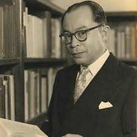

Mohammad Hatta
Mohammad Hatta, yang lahir di Bukittinggi, Sumatra Barat pada 12 Agustus 1902, adalah salah satu tokoh penting dalam perjuangan kemerdekaan Indonesia. Meskipun tidak terlibat langsung dalam pembacaan ikrar Sumpah Pemuda, Hatta berperan besar sebagai wakil organisasi pergerakan yang mendorong semangat nasionalisme dan partisipasi pemuda dalam politik. Ia aktif dalam organisasi Perhimpunan Indonesia (PI) dan Indonesia Muda, yang menjadi wadah perjuangannya untuk menyuarakan kemerdekaan di tingkat nasional maupun internasional. Dikenal sebagai Wakil Presiden pertama Republik Indonesia sekaligus Bapak Koperasi Indonesia, Hatta turut merumuskan dasar-dasar ekonomi Indonesia yang berfokus pada kesejahteraan rakyat melalui sistem koperasi. Selain itu, ia juga memiliki rekam jejak internasional yang diakui, salah satunya ketika ia menerima gelar doktor honoris causa dari Universitas Jepang. Kepeduliannya pada pembangunan ekonomi kerakyatan dan dedikasinya pada perjuangan bangsa menjadikannya salah satu tokoh paling dihormati dalam sejarah Indonesia.